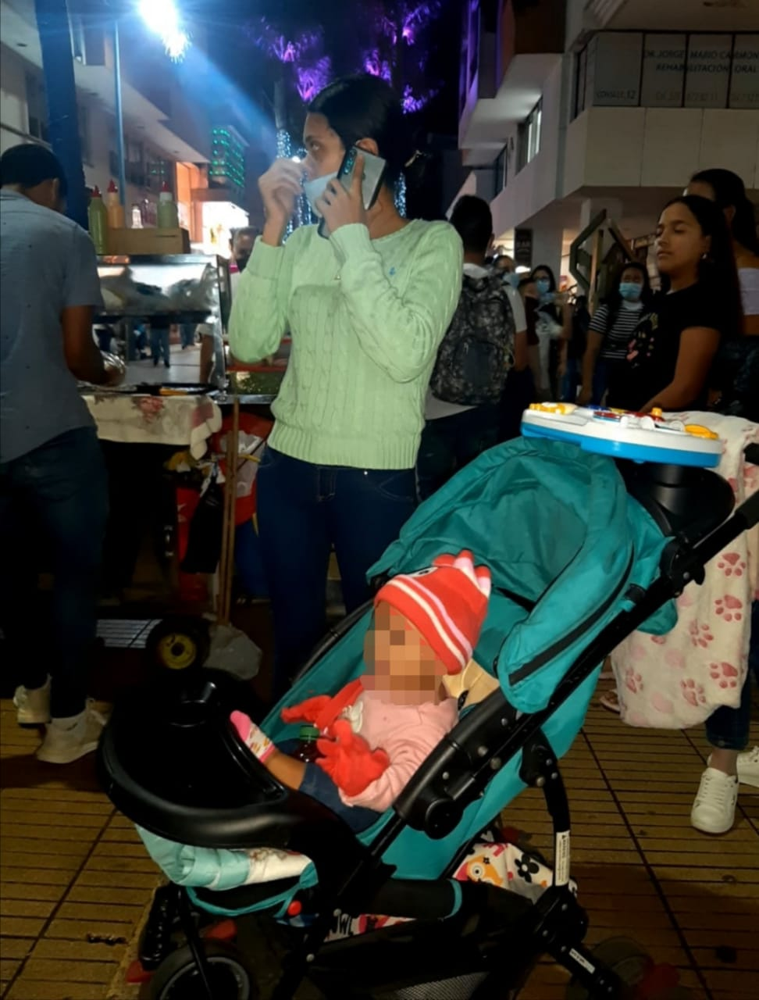
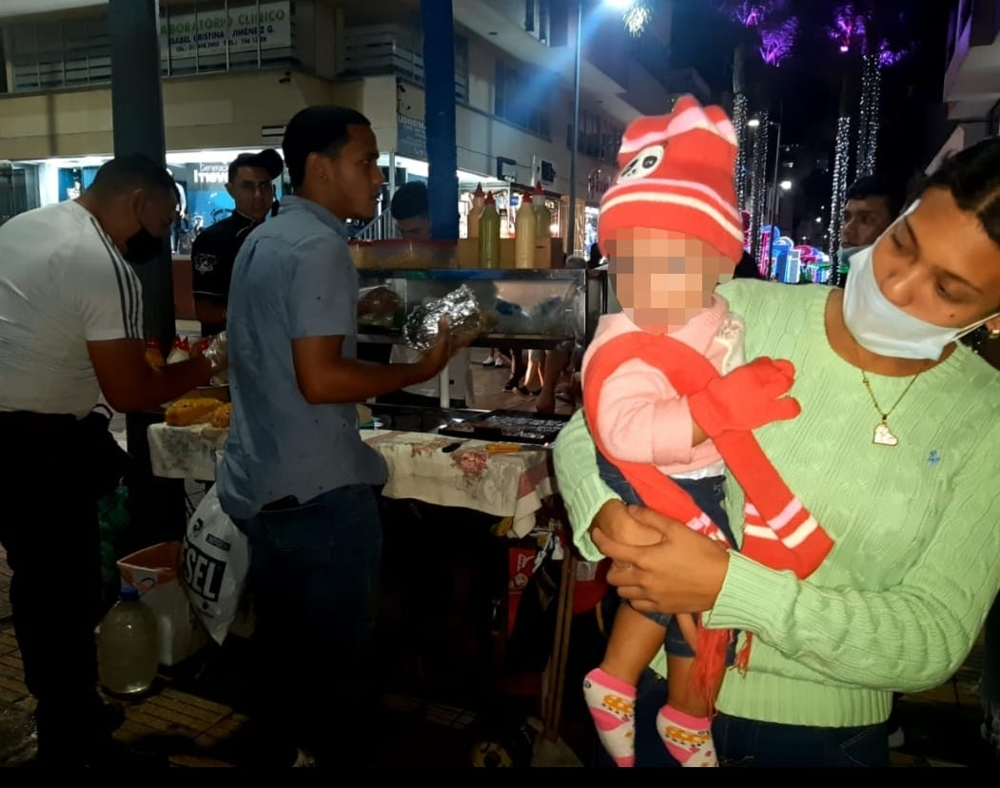

Laura Valencia Zuleta & María Alejandra De Los Ríos Restrepo
Laura Valencia Zuleta & María Alejandra De Los Ríos Restrepo Hace aproximadamente 10 años Venezuela se vio sumida en una crisis económica y social que perdura hasta la actualidad, son cientos las personas que día a día deciden abandonar su hogar por ir en busca de un futuro más próspero. Según datos de la ONU para finales de 2019 en el mudo había más de 2,5 millones de migrantes de esta nacionalidad, lo que equivaldría a un 8,84% de la población total de Venezuela. Así pues, Colombia es el principal destino de los migrantes del vecino país, debido a la “facilidad” de acceso al territorio y su histórico intercambio fronterizo. Durante los años 50 y 60 la realidad era muy diferente, pues eran los colombianos quienes viajaban al país petrolero para garantizarse una mejor vida. Hoy, muchos años después, los papeles han cambiado y son los venezolanos quienes huyen a Colombia buscando refugio.
Por tanto, a nuestro país llegan aproximadamente el 41,62% de los migrantes venezolanos; Perú es otro destino predilecto por los migrantes con una tasa de entrada del 23,91%; y en tercer lugar se encuentra Estados Unidos con el 10,13% del total de migrantes. De Acuerdo con la Agencia de la ONU para los Refugiados (ACNUR) había “más de 1,72 millones de refugiados y emigrantes venezolanos en Colombia al 31 de diciembre de 2020”. Así también, según el departamento administrativo nacional de estadística (DANE) para finales del mismo año, 2020, en Colombia se encontraban alrededor de 2,2 millones de migrantes; de estos la gran mayoría son personas adultas entre 25 y 54 años, que representan el 41,1% (928.000) de la población migrante en Colombia.

Terminal de transporte en Arauca
Conviene subrayar que la población migrante que llega a Colombia se enfrenta no exclusivamente a un cambio cultural, sino también, a las barreras para obtener acceso a la salud, educación, vivienda y al mercado laboral formal. Una de las razones por las cuales sucede esto es por la dificultad de la obtención de los documentos necesarios para formalizar el ingreso a Colombia.
Estos procesos legales pueden ser confusos, demorados y engorrosos, como se puede evidenciar en testimonios que dieron varias personas de procedencia venezolana radicadas en Armenia; estos trámites son primordiales para velar por la protección de los derechos básicos, pero para lograr acogerse a estos tarda semanas, meses o incluso años.

Maribel Fernández e hijas en migración Colombia
Uno de estos casos es el de la señora Maribel Fernández quien huyendo de Venezuela llegó a Colombia aproximadamente hace 6 años. Sumida en el desespero decidió cruzar por el río a las 02:00 a.m con una nena en brazos de apenas 10 meses de nacida, a los pocos días de estar en el país la menor tuvo una complicación de salud producto de una operación que le habían realizado recientemente, le negaron atención médica por no estar registrada al sisben. Cuando llegan de Venezuela lo primero que se debe hacer es una solicitud de refugiados.
En estos trámites se le da prioridad a los menores, pero siguen siendo lentos, la documentación requiere mucho tiempo de gestión y es lo que menos tienen, por ejemplo, para validar la educación de su hija debe tener todos los papeles al día si no la menor perdería todo el tiempo que ha estudiado en Colombia, y el único documento que ha podido
conseguir es un documento del Sisben expedido en 2016 que a la fecha está vencido.
Por la misma situación que la rodea, sus hijas estuvieron un tiempo en bienestar familiar por desnutrición, pues el trabajo informal pocas veces da para una buena alimentación; desde esta entidad les proporcionaban algunas bolsas de bienestarina para que pudiese darles algo de comer a las pequeñas.
Día a día la nostalgia le aprieta el corazón y cuando no pudo más con ese nudo en el pecho regresó a Venezuela. Hace 6 meses, en marzo decidió que volver a su tierra era la mejor decisión, con sacrificio consiguió los 60.000 pesos que costaban el transporte suyo y de sus hijas; en cuanto pisó suelo venezolano y estuvo de nuevo en casa, viejos recuerdos alegres y tristes se adueñaron de su corazón, la triste sorpresa es que no solo los recuerdos habitan en su tierra, sino también la inseguridad, sus compatriotas no perdieron la oportunidad de ver a una mujer indefensa acompañada de dos niñas, allí piensan que quienes viajan desde Colombia traen mucho y son presas fáciles, lo que estos no esperaban es que lo único valioso con lo que viajaba Maribel era una bolsa de bienestarina para alimentar a las niñas. El viaje de regreso tampoco fue fácil, pues debía desprenderse nuevamente de su tierra, de sus aromas, de los viejos vecinos y amigos que atrapados en Venezuela únicamente les podían desear un feliz y próspero viaje, esta vez la tarifa por regresar a Colombia era de 150 dólares una suma altísima para volver a una tierra aún extraña.
Sin duda, está también el tema de la xenofobia, muchas veces se han sentido discriminados por su nacionalidad extranjera. A la niña mayor le hicieron bullying en el colegio, le ponían apodos por su acento y se burlaban de su procedencia, en esta ocasión tuvo respaldo de los docentes que poco a poco lograron hacer que los compañeros de clase dejarán estas actitudes, pero ¿cuántas otras personas no tienen a nadie que los apoye?
Capitulo II
Muchos migrantes venezolanos deciden no perder su tiempo con papeles y largas filas, puesto que, a pesar de que Colombia exige y proporciona a los migrantes una serie de documentos vigentes, diligenciar estos no es nada fácil y tienen que conseguir trabajo para empezar a ganar dinero para sus gastos y los de su familia, además, este proceso puede convertirse en algo costoso, demorado y difícil de gestionar desde Venezuela, muchos deciden ingresar al país de forma ilegal y gestionar los tramiten estando ya adentro, no obstante esto sigue siendo complicado y ellos no tienen tiempo que perder, necesitan empleo rápido, necesitan salud y educación para sus hijos. Apostillar los documentos necesarios para enfrentar el periodo de validez que tienen los papeles legales puede tomar semanas o hasta años; ya que las organizaciones públicas encargadas de este proceso no dan abasto para legalizar a la mayoría de las personas.
En consecuencia, esta infinidad de procesos solo pueden ser catalogados como una conmoción. Lo es para el país de llegada, pues pone a prueba la solidaridad de sus habitantes y la disputa por sus tradiciones, sin embargo, sobre todo desestabilizan los protocolos y la organización institucional. Para quienes llegan también es un choque, incluso más contundente, debido a que es imposible que sea un proceso migratorio reflexionado, ordenado y orientado a la prosperidad familiar. Más que migrar, los venezolanos se han visto obligados a refugiarse en cualquier país que los reciba, no importa las circunstancias en las que lleguen, en otras palabras, están huyendo de una situación insostenible hacia otra precaria. De hecho, según la Encuesta regional de desalojos de las personas refugiadas y migrantes de Venezuela, realizada en Colombia, Perú, Ecuador, Brasil y otros países latinoamericanos en octubre/noviembre de 2020, una inmensa mayoría de estos considera que estaría en riesgo si regresa a Venezuela.
Por otra parte, los políticos locales brindan poca ayuda para atender las necesidades básicas y, por tanto, sus miedos y preocupaciones: Esto puede ser debido a que los migrantes no votan; al menos, no mientras lleven menos de 5 años viviendo en el país si es así únicamente pueden votar en elecciones municipales o regionales. No obstante, sí tienen la tentación y todas las consecuencias que afectan por igual a la población nacional y los migrantes.
Dado que, Colombia no ha sido en las últimas décadas, un lugar de recepción. Ni la ciudadanía, ni el Estado, o las ciudades estaban preparados para la acogida de tantos migrantes. Esta situación no sucede solo en Colombia, sino también en países como Perú, Ecuador y Brasil, puesto que, en apenas cinco años casi dos millones de personas han llegado en condiciones precarias a un país de ingreso medio, profundamente desigual, con altos índices de informalidad laboral, estructuras delincuenciales por encima de la media mundial y que además carece de experiencia en la inclusión de migrantes.
Llegada de venezolanos a Colombia, río Arauca
Todos estos países traen consigo problemáticas muy arraigadas que aportan a su incapacidad para solventar las necesidades de los migrantes venezolanos. De acuerdo a la Encuesta regional de desalojos de las personas refugiadas y migrantes de Venezuela; R4V; febrero de 2021. Datos obtenidos en Colombia, Perú, Ecuador, Brasil y otros países latinoamericanos en octubre/noviembre de 2020.

Viacrucis de familias venezolanas llegando a Colombia, Arauca
En consecuencia, difícilmente pueden satisfacer estas necesidades y con una integración incompleta, que se produce sobre todo en el sistema colombiano. Considérese el empleo y la educación, mecanismos básicos de inclusión. Según datos oficiales, la comunidad venezolana en Colombia sufría a finales de 2019 el doble de desempleo e informalidad, y el triple de adolescentes jóvenes (12-15 años) trabajaban.
Según el DANE, a lo largo del 2020 la participación laboral de las mujeres migrantes ha sido menor a la de los hombres, sin embargo, esto no significa que ese alto número de migrantes cuenten con trabajos estables.
Han existido algunos esfuerzos políticos para mejorar la situación de la población migrante, un ejemplo de esto se pudo apreciar el 6 de abril del año pasado, por la pandemia del Covid-19, el gobierno estaba buscando opciones para que el sistema de salud no colapsara, por esto se crearon protocolos para acelerar la autenticación de los títulos profesionales provenientes del extranjero, sin embargo, poco tiempo después, el gobierno tuvo que revocar esta política debido al rechazo que hubo por parte de la comunidad médica, expresando que el sistema de salud no estaba en riesgo de colapsar, sin importar que existían regiones en las que existió la escasez de personal, la percepción de los migrantes frente a las barreras que existen en la búsqueda de generar ingresos.
Por desgracia la xenofobia ha aumentado en los últimos años, de acuerdo con el boletín #14 de la plataforma Barómetro de Xenofobia, los principales estereotipos o prejuicios que tiene la población colombiana con la comunidad migrante tiene que ver con la supuesta participación de los migrantes en la política, la asociación de la población migrante con crimen y delincuencia y el uso indebido del espacio público y los servicios de transporte público.

Viacrucis de familias venezolanas llegando a Colombia, Armenia
Según la plataforma Barómetro de Xenofobia la tasa de xenofobia más alta durante el mes de octubre se ubicó en el departamento de Quindío, donde 2 de cada 10 publicaciones en redes sociales sobre migración tenían un carácter xenófobo. La tasa de xenofobia no implica que el departamento cafetero sea el más hostil en el trato con los migrantes, pero sí es el sitio en el que más comentarios hostiles se hicieron en plataformas virtuales.
Esta difícil situación, también trae consigo diferentes problemáticas como la xenofobia que puede ser vista desde múltiples aspectos, allí nacen las diferencias entre un migrante y un refugiado venezolano las cuales son abordadas en el podcast ¿Son los venezolanos migrantes o refugiados?
Otra de estas historias es la de María, una joven venezolana que junto con su novio, su hija y su padre llegaron a Colombia hace 8 meses. Desde entonces se sostienen vendiendo perros por las calles de armenia más concurridas como lo son la 14 y la plaza de Bolívar-
Así como ellos son varias familias venezolanas que salen a las calles de Armenia con un carro de hotdogs para rebuscarse con que vivir, muchos de ellos salen con sus hijos en brazos o para que ayuden con el trabajo. Según el secretario de Educación Henry Gómez Tabares, “En las instituciones educativas oficiales de la capital quindiana están matriculados 590 alumnos de origen venezolano, lo que ha significado la inversión de $2.300 millones del Sistema General de Participación” a pesar de estas cifras tan importantes, muchos migrantes se han quedado por fuera de estas ayudas debido a sus agendas laborales o la imposibilidad de contar con los recursos económicos necesarios para poder estudiar.

Por otro lado, la alcaldesa encargada Debbie Duque Burgos durante la sesión extraordinaria del Consejo de Migraciones, informó “Este es un gran avance para el Municipio porque integra los servicios interinstitucionales y optimiza los recursos para la atención básica y humanitaria a los venezolanos, que llegan a nuestra ciudad” A pesar de estos esfuerzos, José el padre de Luciana, cuenta que ha sido muy difícil poder sacar el sisben para su novia y su hija, además de que tuvo que pagar, para obtener este beneficio. Por ahora ni su yerno ni él, tienen Sisben debido a la cantidad de papeleo y requerimientos para obtenerlo.
Así también, José señala que la alcaldía de armenia le impide trabajar, “No me dejan trabajar, pero a los indigentes que si se ven feos en las calles, a esos no los quitan, pero a nosotros si”, hace 8 meses huyen de estos funcionarios debido a la advertencia que le han hecho sobre decomisar el carro de hotdogs con el que trabajan.
Sobre esto un funcionario de la secretaría de gobierno y convivencia informó: “Los establecimientos pagan impuesto, mientras los de la calle no. Ellos no tienen ningún permiso, las quejas vienen de la misma ciudadanía, los negocios llaman, para poner aviso” Así como hay leyes que respaldan estas denuncias, también hay una ley con el fin de garantizar los derechos a la dignidad humana, al mínimo vital, al trabajo y a la convivencia en el espacio público, la “Ley 1988 de 2019” tiene por objeto establecer los lineamientos generales para la formulación de la política pública de los vendedores informales.